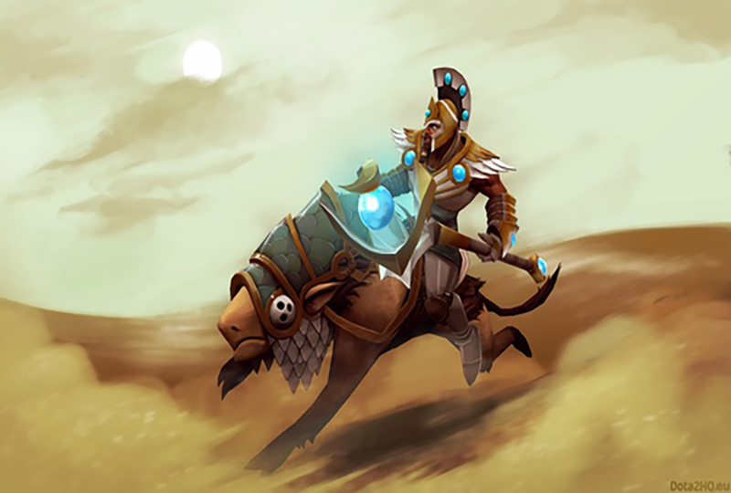
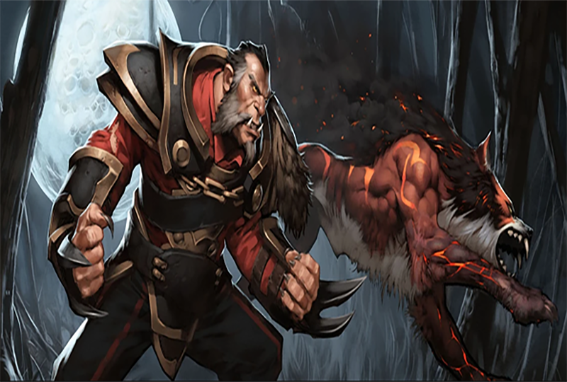

My Fave Role in Dota2

Support
One of the most needed role in-game and I am comfortable in using Heroes like Chen to help my team using my captured creeps and items.

Offlane
Tank heroes are the second role I picked if the support roles are filled. Tanks are like a support but in the frontline. Absorbing incoming damage in-order to shield my team.